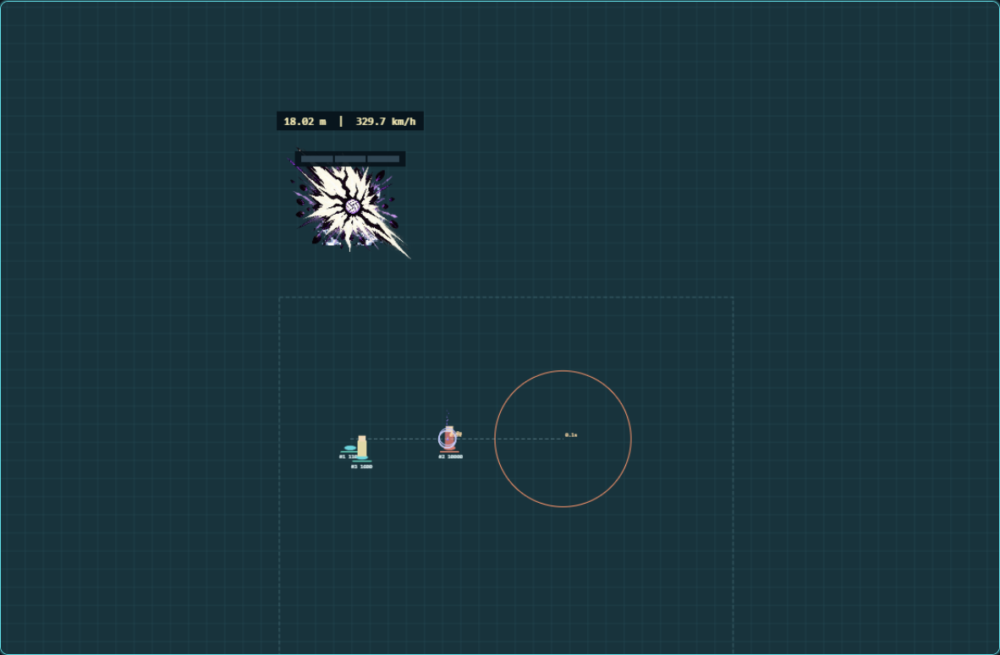
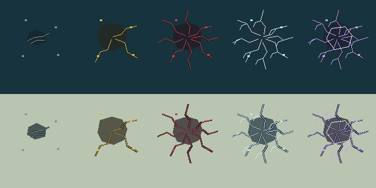

Rally 3.3 — one impact frame at ball contact
Updated to the latest correction: one large 0.1-second drawing on the airborne ball when the spike releases. It appears once per shot. No map overlay, ground impact frame, landing frame or two-second frame sequence.
Open Lab · Global Serve demo · Local 10 m demo
Actual shared-core animation — plays once

The ball stays normal-sized. Compression rings and surrounding lightning intensify during the five-second charge. Aim for four seconds; lock the final second. Replay with either demo link above.
Artwork review only. Shipped integration and actual-game acceptance remain separate. Nothing is installed.
The contact drawing

One 300×300 drawing held for six simulation ticks. It does not restart during renewals, pause the simulation, shake the camera or apply extra control. The normal-colour landing effect and crater remain gameplay feedback.
Cleaner, distinct craters

Simple geometric fractures replace the generated crater texture. Colour follows this attack’s tier, independently of the permanent body. Black-tier slow is 20% for two seconds; White and Impossible retain 30% for four seconds.
Reach, storm and damage
| Route | Requirement | Reach / base blast radius |
|---|
| Local Impossible | Prior White, five-bar play, perfect takeoff, contact ≥10 m | 400,000 / 80,000 |
| Serve Impossible | Prior White, five-bar play and perfect contact | Current map or realm / 120,000 |
Every ordinary Serve aims in any direction. Overpressure adds 20% radius at 300+ km/h. Global reach grants no vision or cross-realm interaction.
Lightning warns around visible enemy champions within reach, not around the cursor. Up to five are marked each half-second. Each fixed 18,000-radius patch warns for 0.4 seconds, then slows by 15% for 0.6 seconds. Ten simultaneous patches maximum; no lightning damage or knock-up.
The ball travels harmlessly through units and walls. Only the endpoint damages: 100% at centre, 62.5% halfway and 25% at boundary. Receive force applies once after falloff. Blast knock-up and crater slow retain their normal footprint.
Evidence and remaining boundaries
Pace is a plain three-section bar. Height and km/h remain adjacent. The inspector retains role and exact resources. Native Receive/support receipts remain disabled until verified; Lab receipts are simulated.
References were visually inspected: Ian Zhang at 0:15 · ZiShen44 guide. The original drawing and timing are mod adaptations. Generation is not deterministic; frozen sources and mechanical packing are reproducible.
Current changes and verification · Preserved 3.2 checkpoint